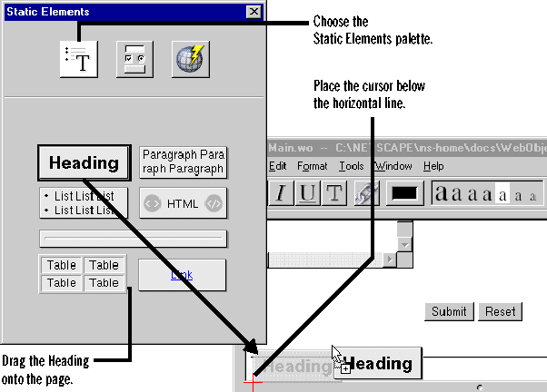
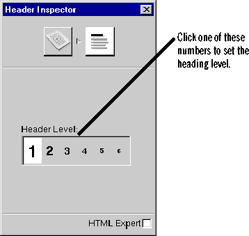

Creating a Simple WebObjects Application
 Table of Contents
Table of Contents  Previous Section
Previous Section
Create the application's output
So far, you have a way for the guest to enter information, a way for the application to add that information to the guest list, and a way to store the guest list. Now, you need a way for the application to display the list of guests. To do this, you'll add more dynamic elements to the main page. But first, create a heading for the output.
Create static HTML elements
When you created the heading at the top of the page, you just typed directly into the Main component's window. To create the heading for the page's output section, you could just do the same thing, but it's more common to drag elements from the palette so that you can better control what HTML tags are used.
- Place the cursor at the bottom of the Main page, below the horizontal line.
- In the palette window, click the first icon to display the Static Elements palette.
- Drag a heading element to the page.
- Select the text inside the heading and type Guests.

You just added a static HTML element, a heading, to the page. As an optional step, you can modify the heading's appearance using the inspector panel. Click the inspector button (the button labeled with an "i") to display the inspector panel. Select the heading element, and you'll see the properties you can set for the heading. You can change the heading to any one of the six levels supported in HTML (H1 through H6). To learn more about adding elements to the page, see "HTML Editing in WebObjects Builder" in Using WebObjects Builder.

Table of Contents  Next Section
Next Section